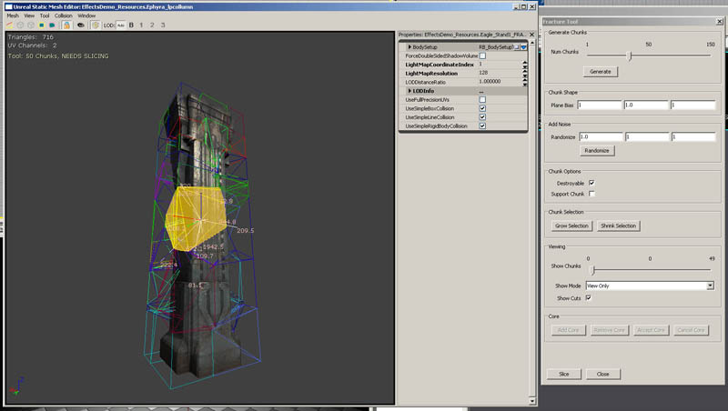
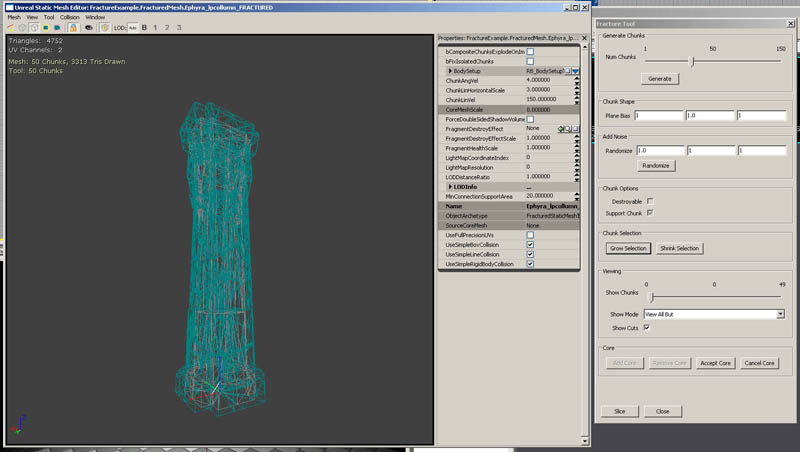
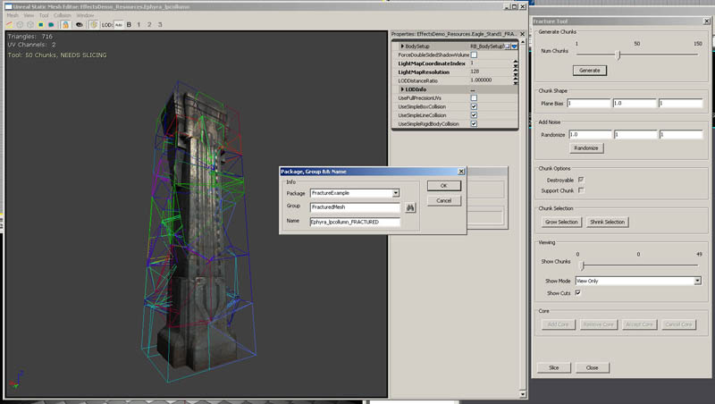
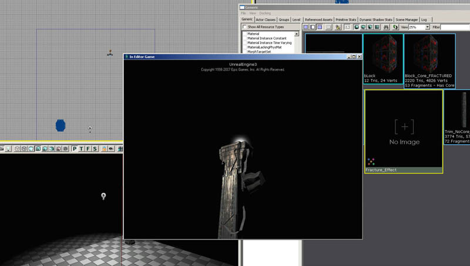

UDN
Search public documentation:
FractureToolCH
English Translation
日本語訳
한국어
Interested in the Unreal Engine?
Visit the Unreal Technology site.
Looking for jobs and company info?
Check out the Epic games site.
Questions about support via UDN?
Contact the UDN Staff
日本語訳
한국어
Interested in the Unreal Engine?
Visit the Unreal Technology site.
Looking for jobs and company info?
Check out the Epic games site.
Questions about support via UDN?
Contact the UDN Staff
破裂的静态网格物体
概述
破裂工具基础

如何破裂网格物体
选择及控件
单独块的原点(及它们相应的块)可以在切割样式中进行选择，并且可以使用出现的控件进行移动。当选中一个块时出现的线显示了块的邻接块，它有利于可视化破裂的网格物体的结构。数量意味着它和这些邻接块的‘连接区域’。粉色的线是指那个块的外部几何体的 平均表面法线 – 这在块相互破碎脱离时使用(请看下图)。
块数量
当打开了静态网格物体、破裂对话框处于可见状态时，工具中的第一个滑块是Chunk Count(块数量)的值。这个值决定了工具将会把原始网格物体切割为多少块。这是在视觉效果和性能之间进行平衡的最明显的地方。块的数量值很大意味着在最终的物体上有更多的三角形，同时破裂的网格物体会破裂为大量的actor。块的数量值较小意味着将会产生较少的actors和三角形，但是一个较低总体破裂数量意味着当物体破碎时视觉效果将会下降。一旦物体被分割完成，块的数量可能后稍微地下降。这是因为已经剔除了那些完全地在物体内部的块以及任何面都不能在物体表面看到的块。
平面偏移
破裂工具中的下一组值是平面偏移。这个值在XYZ上缩放破裂平面，根据您输入的值可以使切割块变宽或者变窄。在截图中，您可以看到在一个或者两个坐标中应用了较大的缩放比例，网格物体则被切割为类似的块而不是均匀大小的块。这对于破裂不同的材质类型是有用的，比如从木头中获得窄的裂片，然而在岩石网格物体中获得具有更加规则形状的块。
修改点
修改点工具可以用于或者把选中的(或者全部的)块的原点移向物体的边界或者在切割样式中把某些或者所有块的原点打乱。把块的原点移向边界对避免由于块没有切割网格物体的表面而导致大量块被丢弃的情况是有用的。打乱原点对于避免某些切割过于线性化的区域是有用的。您首先使用入口盒来指出允许的最大XYZ运动，然后点击Move to Faces(移动到面)或者Randomize(随机化)工具来修改块的中心点，并查看新的切割样式。如果您选中了一些块，那么它将仅修改选中的块。
块选项
在Chunk Options(块选项)下的复选框用于控制块是否从它的父项网格物体分离、决定块是否可以被连接到网格物体的主体上以及是否产生一个破裂块的物理表现。- Destroyable(可破坏的) - 决定了块是否对收到的冲力作出反应，从原始网格物体分离开来。如果不选择这个单选框，块将不会对导致它破碎脱离的破坏力及其它的冲力做出反应。
- Support Chunk(支持块) - 在网格物体中创建‘锚点’。如果一个块没有从网格物体脱离，但是通过仍然和它保持连接的块网络不能确定启用了这个标志的块的位置时，这项在物理上将变为活动状态。这种情况的一个实例便是在基部启用支持块标志的柱子。如果删除柱子的中间部分，即使它没有和柱子的顶部相互作用，但由于它不再能找到原始网格物体基部的支持块的连接，柱子的顶部将会跌落。这项可以和网格物体属性中的!bCompositeChunksExplodeOnImpact标志联合使用。这个标志(如果启用)将会导致任何一组丢失和锚点连接的块在它们和世界发生的下一个碰撞发生时破碎。在前面的柱子顶部的例子中， 一旦柱子的顶部和地面发生碰撞，组成那个柱子的块将会破碎。这对于降低在世界中模拟的较大的物理物体数量是有用的。请确保
MinSupportConnection(最小支持连接数)的值比您的所有连接区域的结果小。 - Spawn No Physics(产生物没有物理) - 阻止生成物理碎块，忽略在!FracturedStaticMesh选项中的!ChanceOfPhysicsChunk设置。
块选择
Chunk Selection(块选择)按钮用于增加、减小或者修改当前选择的块选项的集合。必须至少选中一个块才能使得这些块有效。选中一个块，您可以使用工具来到处移动那个块的中心，这样将会重新计算网格物体的破碎块。Select Top(选择顶部) 和 Select Bottom(选择底部)按钮将会把最顶部或者最底部的块(由物体的边界盒决定)添加到选项集合中。这个功能对于快速地设置哪些块是support chunks(支持块)是有用的。Invert Selection(反选)按钮正如它的意思所示，将会反转所有块的选中状态。

查看
查看选项允许您将视图限定为三个选项其中的一个。这些选项是View Only(仅查看)，仅显示和当前的滑块位置相符的块。View All But(查看除这些以外所有的块)将会显示除了和当前滑块位置相符的块以外的所有块。View Up To(查看至)将仅显示从当前滑块位置及其以下的块。Show Cuts(显示剪切)复选框用于停止渲染线框切割样式，块是根据这个样式来生成的。Show Cuts Solid(显示剪切固体)将把切割样式渲染为填充物体，从而更加容易地可视化切割样式。在这个模式下，进行块的选择变得更加容易，因为可以通过点击块的表面进行选择。Show Visible Cuts(显示可视剪切)将仅渲染当前可见的块，使其可视化。 有几种块的渲染方式，可以通过下Slice Color Mode(切割颜色模式)下拉列表进行选择。默认值是Random(随机化)，它将会随机地把颜色分配给块。Support Chunks(支持块)选项将会把标记为支持块的块设置为红色，非支持块设置为蓝色。Destroyable Chunks(可破坏的块)和支持块相反，任何可破坏的块都为红色，任何不可破坏的块都为蓝色。No Physics Chunks(无物理的块)将会使任何标记为不产生物理的块为红色。 Show Core(显示核心)将切换核心网格物体的渲染(如果分配了核心网格物体)。


顶点颜色
当切割网格物体时，将会在网格物体的内部面上应用一个顶点alpha(透明度)。如果一个顶点被网格物体原始表面上的多个面所共享，那么顶点的顶点alpha(透明度)设置为1，所有其它的顶点设置为顶点alpha(透明度)0。这可以用于根据破裂块的深度来在材质中产生各种变化。UVs
如果网格物体有一个光照贴图坐标集合，并且具有有效的LightMapResolution(光照贴图分辨率)，引擎将使用原始UV通道的布局为那个网格物体自动地生成光照贴图UVs。原始光照贴图UVs将会被稍微地缩放，新的破碎网格物体将会被排列在由于缩放导致的空白空间中。针对破碎网格物体的一个有用的技术是把那个UV集合作为应用到新创建的内部表面的材质的坐标。一般情况下这是通过在应用到内部表面的材质上使用!TextureCoordinate(贴图坐标)节点来完成，并使得!CoordinateIndex(贴图坐标索引)大于零。Core(核心)
破裂网格物体的核心是一个单独的静态网格物体，它可以被融合到破裂的网格物体中并可以用作为破裂物体的内部结构。除非至少已经删除了一个块，否则将不会渲染核心网格物体。为了把核心网格物体添加到破碎的网格物体上，需要在通用浏览器中选择一个有效地静态网格物体，然后点击Add Core(添加核心)按钮。这样便会把那个网格物体的实例添加到查看器中，并且您可以使用控件来移动及缩放这个物体。在这个模式下点击空格键将可以在平移(移动)和缩放模式间切换。在缩放模式中，按下SHIFT键将会均匀地缩放核心网格物体；然而在没有按下SHIFT键情况下点击并拖拽一个坐标轴将会是核心网格物体沿着那个轴进行缩放。 我们推荐把核心网格物体完全地放在破裂网格物体的几何体的内部，因为一旦已经从破裂网格物体中删除了一个块，便可以看到核心网格物体。一旦核心网格物体被放置并缩放到理想的位置，点击Accept Core(接受核心)按钮来重构那个破裂网格物体，使得核心在它的内部。一旦完成了添加核心网格物体，可以通过点击Remove Core(删除核心)按钮来删除它。每个破裂的网格物体只能有一个核心网格物体。 核心网格物体将会基于它们的简化碰撞来重新切割破碎的网格物体。简化碰撞图形的面将会尝试对块进行简单地重新分割，但是不能分割为非凸面体图形。这将会导致在某些平坦表面上产色很难过较细的块，但是它不会从新切割包含转角或者其它凸面几何体的块。

Slice(切割)
Slice(切割)按钮将真正地基于当前的切割样式来修改网格物体并计算新的多边形面。当您点击这个按钮时，它将会打开一个对话框提示用户把新的破碎静态网格物体放置在包中。这是创建破碎几何体的最后一步。这也是为网格物体生成新的UVs的时候。所有新创建的面即那个会和一个新的材质进行映射，默认情况下是空白。不包含表面几何体的块(也就是完全在网格物体内部的块)将会被丢弃，从而减少多边形的数量。
在世界中放置破裂网格物体
一旦创建了破裂网格物体并将其保存到包中，便可以将其在世界中进行放置了。在通用浏览器中定位一个破裂网格物体并选择它。在世界中右击，然后选择Add Actor -> Add FracturedStaticMesh。这将会在世界中放置那个破裂网格物体，现在便可以同它进行交互作用了。
 注意DamageType(破坏类型)类中的bCausesFracture标志必须设置为TRUE，以便破坏可以影响网格物体。
注意DamageType(破坏类型)类中的bCausesFracture标志必须设置为TRUE，以便破坏可以影响网格物体。
破裂网格物体选项
- bCompositeChunksExplodeOnImpact(当发生碰撞时合成的块爆裂) - 这个标志决定了已经从任何标记为Support Chunks(支持块)的块分离的破碎网格物体的部分是否保持它们的完整性。如果标志位真，则当倒塌的破裂网格物体的任何部分和Support Chunk(支持块)的连接已经被删除时，这些破碎的部分一旦和世界接触时将会分裂出它们自己的块。
- bFixIsolatedChunks (固定单独的块) -如果这个标志为真，破裂网格物体将会忽略到Support Chunks(支持块)的所有连接，并且把每个块当做单独的块对待。这将导致无论网格物体块的连接到破裂网格物体中其它块的连接情况如何，在网格物体没有破碎之前，这些块将一直保持在原位。
- bUniformFragmentHealth(统一的碎片生命值) – 这个标志禁用了基于和原始物体相关的块的大小来调整每个块的生命值的功能。默认的行为是小的块将会比大的块具有较少的生命值。
- ChanceOfPhysicsChunk (物理块百分比) – 个值缩放当一个块受到破坏时破坏后的块产生物理效果的可能性百分比。默认值为1.0(100%).
- ChunkAngVel(块的角速度) - 值代表了块从主破裂网格物体分离时给予破裂快的角速度(旋转速度)的大小。
- ChunkLinHorizontalScale(块的水平速度缩放) -当一个块爆裂时，这个值在垂直运动上使水平运动发生偏移。较大的值意味着更大的水平速度。
- ChunkLinVelocity(块的分离速度) - 当块和主网格物体分离时，块远离主网格物体的速度。块的移动方向由原始表面几何体的平均表面法线决定。
- DynamicOutsideMaterial(动态外部材质) –如果设置，这项将为所生成的动态部分的OutsideMaterialIndex(外部材质索引中)指定的部分设置材质。
- ExplosionChanceOfPhysicsChunk(物理块的爆炸几率) –这个值缩放了由于爆炸破坏导致在破碎时产生物理块的几率。
- ExplosionPhysicsChunkScaleMaX(爆炸生成物理块的最大缩放比例) –由于爆炸破坏导致生成的物理块的最大比例。
- ExplosionPhysicsChunkScaleMin(爆炸生成物理块的最小缩放比例) –由于爆炸破坏导致生成的物理块的最小缩放比例。如果
ExplosionPhysicsChunkScaleMax和ExplosionPhysicsChunkScaleMin的值一样，那么将不会有变化。 - ExplosionVelScale(爆炸速度缩放) – 对由于爆炸破坏生成的物理块所具有的速度进行缩放。
- FragmentDestroyEffect(碎片破坏特效) - 在这个域中输入一个粒子系统，这将会导致从原始破裂网格物体分离的任何块的中心产生粒子系统。这个特效是定向的，所以粒子特效的X轴向下指向粒子发射方向，并且被附加到向下落的块上。


- FragmentDestroyEffectScale(碎片破毁效果缩放) - 当产生!FragmentDestroyEffect(碎片特效效果)时，应用到其上面的统一缩放。
- *FragmentHealthScale(碎片生命值缩放) * -这个值用于缩放使一个块从破碎静态网格物体分离所需要的破坏量的大小。每个块的生命值基于它的大小决定。
- FragmentMaxHealth(碎片最大生命值) – 设置一个块可以具有的最大生命值。
- FragmentMinHealth (碎片最小生命值) – 设置一个块可以具有的最小生命值。
- *LoseChunkOutsideMaterial * – 这项将覆盖应用到产生的物理块上的材质，有效地材质ID在!OutsideMaterialIndex中进行设置。
- MinConnectionSupportArea(最小连接支持区域) -被认定为处于连接状态的两个块所需共享的表面区域的大小。这项用于确定一个块是连接到破裂网格物体的支持块上。
- bSpawnPhysicsChunks(产生物理块) - 默认为真。如果为假，当打落一个块时将不会导致产生物理块。但是FragmentDestroyEffect仍然处于激活状态。
- NormalPhysicsChunkScaleMax - 由于正常破坏所生成的物理块的最大尺寸。
- NormalPhysicsChunkScaleMin –由于正常破坏所生成的物理块的最小尺寸。
破裂限制
虽然破裂工具可以应用于任何静态网格物体，但是对于某些凸面体几何体图形将不会获得最佳效果。如果物体没有内部结构，那么将可以获得最佳效果。具有内部面的物体有可能会在被分割物体的内部部分上创建不正确的面(如果物体有相互交叉的面或者有内部未闭合的空间，比如管或者空洞，那么将会有很高的几率产生不正确的面)。破裂工具尽可以应用于闭合的网格物体上。它不能处理像管子那样的凹陷空洞的网格物体。
技术信息
- 当您在使网格物体破碎时，增加网格物体 多边形/顶点 的数量。
- 增加顶点光照数据的内存消耗。
- 每个实例的索引缓存的内存消耗。
- 当改变可视化状态时，重新计算索引缓存所花费的时间。
- 生成动态物理块的性能消耗。这些也使用动态光照。